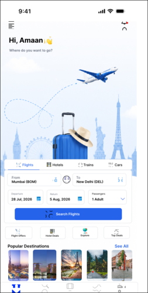
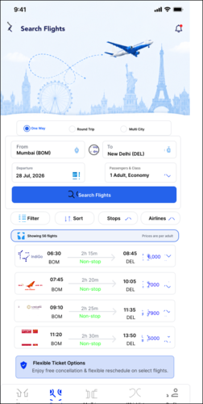
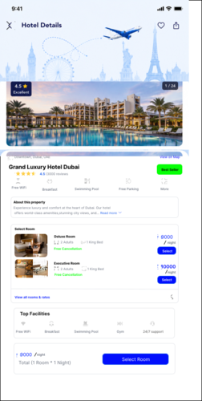
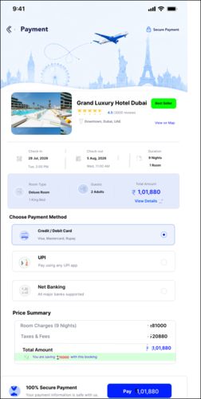
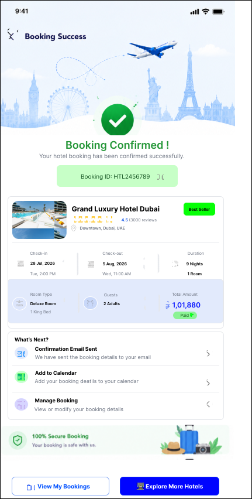
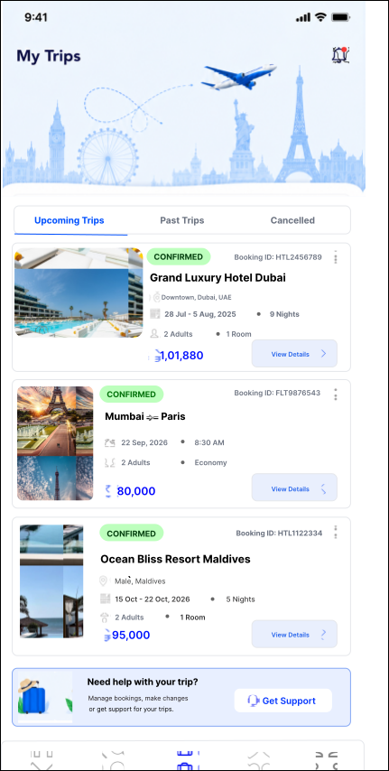
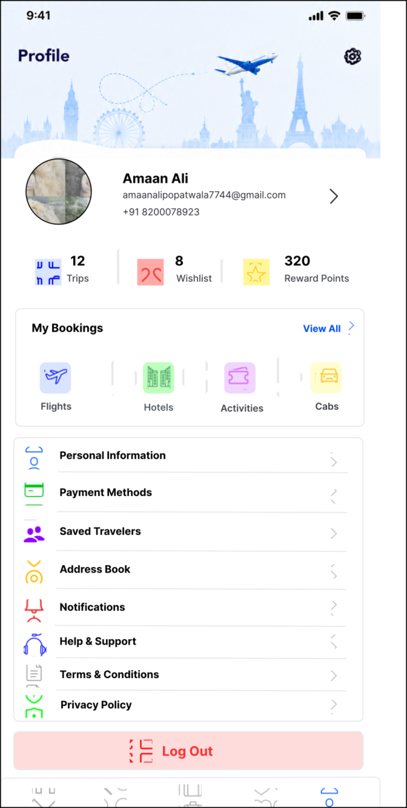
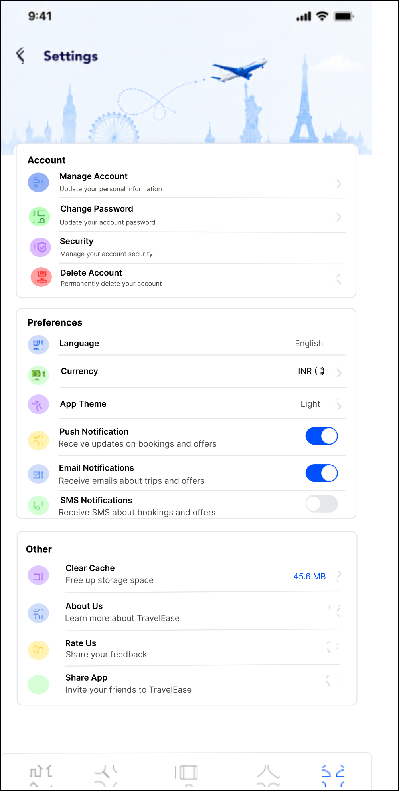

TravelMate
Flight booking.
A travel-focused mobile app concept completed based on the supplied screen set. The screens supplied so far establish a clean, bright direction for discovering and booking flights.
Explore. Book.
Travel.
The current screens use a bright interface, blue accents, travel imagery and a straightforward mobile-app structure. This case study intentionally documents only the work that has been supplied so far.
Eleven screens
complete.
These are the eleven TravelMate screens supplied for the project. The final screen is now included below, completing the current screen set.











Case study
screen set complete.
The final supplied TravelMate screen is now included. The case study can be presented as a complete screen-set project while keeping any unprovided research or outcome claims out of the story.